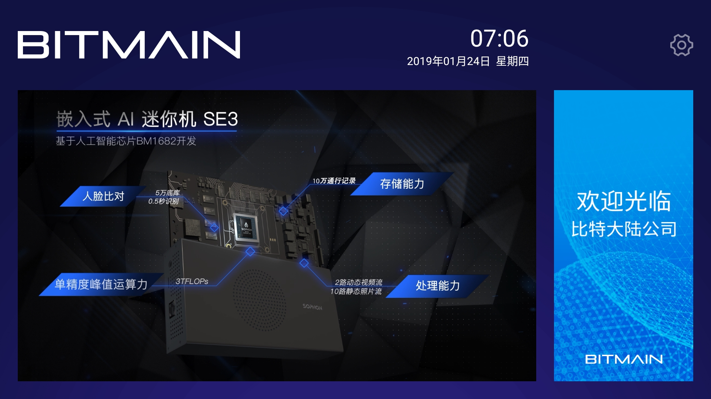
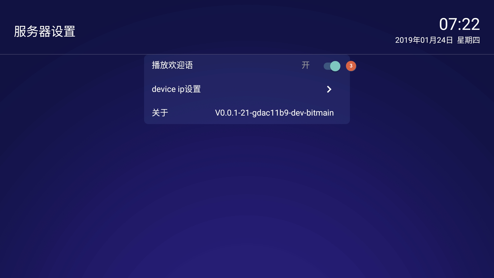
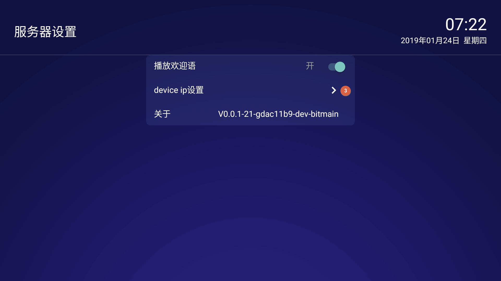
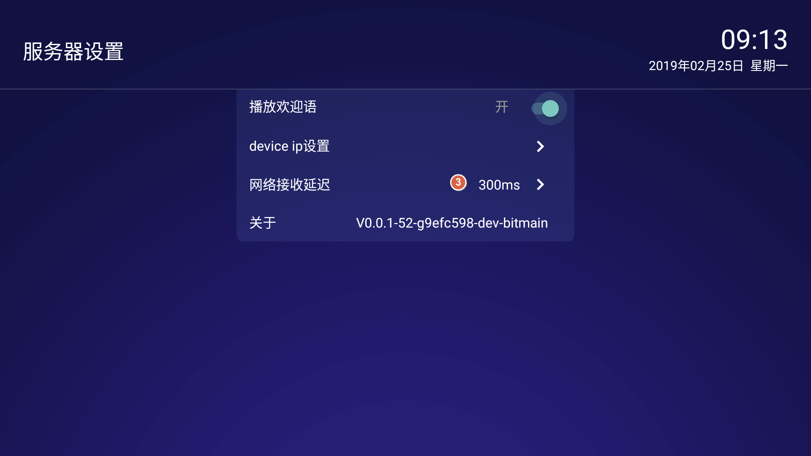

迎宾电视APK操作指南

4.1 在哪里下载迎宾机APK？
内部下载地址是：
http://10.32.225.82:8080/apks/autobuild/WelcomeTV/origin/master/
4.2 如何更改迎宾机界面？

选择右上角 “设置” 按钮
点击 “替换皮肤”
从U盘中浏览到制作好的皮肤文件夾（名字为 "skin"，并且里面有了个子文件夾名字叫 "mipmap")
点 “确认”。更换皮肤完成。
注意:
因为Android电视有兼容性问题，建议在迎宾机APK运行的情况下重新插入U盘。不然可能会发生无法找到U盘的问题发生
在测试过程中发现创维等部分设备内部存储设备不可用，导致替换皮肤失败，考虑到兼容性，创维等设备直接读取U盘里面的皮肤文件，无需重启。
4.3 如何定制皮肤？
请以附件zip档案解压缩后存到U盘中，并以它为模板，定制自己的皮肤。请注意，'skin' 这个目录是我们要选择的皮肤目录。
定制皮肤，对logo文件的文件名有无要求？
有，右上角logo文件命名为logo.png,右侧命名为bg_right.png,文件格式严格要求为png格式。
 skin.zip
skin.zip4.3 如何更改播放视频内容？

选择右上角 “设置” 按钮
点击 “选择播放视频”
选择U盘中的视频播放列表文件autoplay.txt文件
点击 “确认”。开始播放文件
4.4 如何制作播放列表文件？
请以附件列表文件(autoplay.txt)为模板，制作自己的播放文件。
播放视频的能力与电视机支持的视频格式有关，建议使用常用的 MP4 文件格式。
autoplay.txt内容为根目录下video文件夹下视频地址的列表信息，分行列出。
比如：
video/trailer.mp4
video/mov_bbb.mp4
video/big_buck_bunny.mp4
分别代表的是根目录下video文件夹下面放有名字为trailer，mov_bbb，big_buck_bunny的三个mp4文件。
视频文件名字可以修改，格式为mp4文件，必须在video目录下。
4.5 如何关闭欢迎语音？
默认情况下，迎宾机APK会在识别到访客后，播放欢迎语音。
如果不需要此功能，可以按以下步骤关闭。


- 点击右上角“设置”图标
- 选择“设置”按钮
- 点击 “播放欢迎语”，切换为“关闭”状态
4.6 如何过滤掉不需要的输入源？
默认情况下，迎宾机APK会显示所有输入源送过来的迎宾信息。在某些环境下，您可能需要过滤掉不需要的图像输入源，比如前门迎宾电视只显示前门抓拍机输入，后门迎宾电视只显示后门抓拍机输出，并且前门和后门抓拍机都连接到同一台SE3小盒子。则可以按如下方法配置使用。


- 点击右上角 ”设置“ 图标
- 在弹出的菜单中，选择 设置“
- 进入子页面后，选择 ”device ip设置“
- 输入允许接收的抓拍机IP地址
- 选择 "添加” 按钮。配置完成。 注意： 可以添加多个允许的抓拍机IP，最多不超过10个。
4.7 设置网络接收延迟时间？
默认网络接收延迟时间为300ms,经测试，在无线网络环境下，网络延迟在200ms是比较稳定的，有线网络环境下可以设置为0ms。也可以根据实际情况调试出实际场景的最佳延迟时间。


- 点击右上角 ”设置“ 图标
- 在弹出的菜单中，选择 设置“
- 进入子页面后，选择 ”网络接收延迟“
- 弹出网络接收延迟设置，修改默认的网络延迟时间。
- 选择 "确认” 按钮。配置完成。